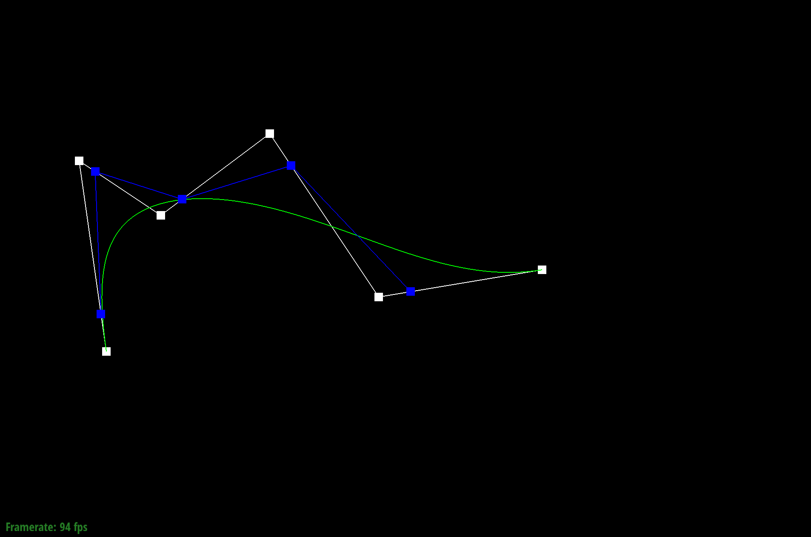

CS184/284A Spring 2025 Homework 2 Write-Up
Link to webpage: https://cal-cs184-student.github.io/hw-webpages-zkl-writing/
Link to GitHub repository: https://github.com/cal-cs184-student/sp25-hw2-zkl-2
Overview
In this assignment, we explored geometric modeling techniques by implementing Bézier curves and surfaces, triangle mesh processing, and Loop subdivision for mesh upsampling. Our work spanned both curve-based and mesh-based representations.
We implemented De Casteljau’s algorithm to evaluate Bézier curves, progressively interpolating control points. This concept was extended to Bézier surfaces, where the algorithm was applied in two parametric dimensions to generate smooth surfaces from control grids.
For triangle mesh processing, we worked with the half-edge data structure, a fundamental representation for efficient mesh operations. We computed area-weighted vertex normals to enable smooth shading effects. Additionally, we implemented edge flip and edge split operations, which modify mesh topology while maintaining connectivity.
In Loop subdivision for mesh upsampling, we implemented the Loop subdivision algorithm, which smooths triangular meshes by refining vertex positions. We observed how sharp corners and edges become progressively smoother with each subdivision step and identified an asymmetry issue in the cube's subdivision process. To address this, we pre-split edges, ensuring a more symmetric mesh before applying the subdivision.
Through these implementations, we gained insights into recursive curve evaluation and how it extends to surfaces, mesh modification techniques that balance flexibility and efficiency, and the impact of topology on subdivision.
Section I: Bezier Curves and Surfaces
Part 1: Bezier curves with 1D de Casteljau subdivision
De Casteljau's algorithm is a recursive method for evaluating points on Bézier curves. Starting from a set of original control points, the algorithm performs repeated linear interpolation steps, progressively reducing the set of points until a single final point remains. This final point lies on the Bézier curve at the parameter \( t \).
Given control points \( p_1, p_2, \dots, p_n \) and parameter \( t \in [0, 1] \), the interpolation at each recursive step is: \[ p_i' = (1 - t) p_i + t p_{i+1} \]
Implementation Details:
In BezierCurve::evaluateStep(...), I implemented the algorithm by:
- Creating an empty vector
intermediate_pointsto hold points computed during interpolation. - Iterating through pairs of adjacent control points from the input vector and computing each new intermediate point using the interpolation formula mentioned above.
- Appending each newly computed point to
intermediate_points. - Returning the vector
intermediate_pointsafter performing interpolation for each pair of points once per recursive call.
This function performs exactly one step of the recursive subdivision, allowing the entire de Casteljau algorithm to be completed by repeatedly calling this method until one final point is obtained.
|
|
The left column is the screenshots of each step of the evaluation from the original control points down to the final evaluated point; and the right column is the screen shots of each step with a different parameter t.
|
|

|
|
|
|
|
|
|
|
|
|
|
|
|
Part 2: Bezier surfaces with separable 1D de Casteljau
The de Casteljau algorithm is an elegant recursive method originally designed for evaluating points on Bézier curves. Extending this algorithm to Bézier surfaces involves treating the surface as a grid of Bézier curves in two parameters, \( u \) and \( v \).
To evaluate a Bézier surface defined by an \( n \times n \) grid of control points, the algorithm performs the following steps:
- Curve Evaluation in the u-direction: Each row of the \( n \times n \) grid represents a separate Bézier curve. Using parameter \( u \), the de Casteljau algorithm evaluates each of these Bézier curves independently, reducing each row of control points to a single point.
- Curve Evaluation in the v-direction: The points obtained from evaluating each row create a new set of control points aligned along a column. These points define another Bézier curve parameterized by \( v \). Evaluating this curve at parameter \( v \) yields the final point on the surface.
Implementation Overview:
-
BezierPatch::evaluateStep(...): Recursively computes intermediate points between adjacent control points using interpolation: \[ P_{new} = (1 - t) \cdot P_{i} + t \cdot P_{i+1} \] Returns a vector of intermediate points after one interpolation step. -
BezierPatch::evaluate1D(...): Repeatedly callsevaluateStepuntil only one control point remains, representing the final evaluated point for the curve at parameter \( t \). -
BezierPatch::evaluate(...): First appliesevaluate1Dacross each row of the control point grid using parameter \( u \), reducing each row to one point. Subsequently, appliesevaluate1Don these points using parameter \( v \), yielding the final point on the Bézier surface.
Our Result:
|
|
Section II: Triangle Meshes and Half-Edge Data Structure
Part 3: Area-weighted vertex normals
We computed area-weighted vertex normals using the following step-by-step approach:
- Iterate over adjacent faces: For each vertex, we traversed through all adjacent (neighboring) faces using the half-edge data structure.
-
Get vertex positions: For each adjacent face, we obtained the positions of its vertices as follows:
Vector3D p0 = h->vertex()->position; Vector3D p1 = h->next()->vertex()->position; Vector3D p2 = h->next()->next()->vertex()->position; -
Compute edge vectors: From these positions, we computed two edge vectors originating from the vertex of interest:
Vector3D edge1 = p1 - p0; Vector3D edge2 = p2 - p0; -
Calculate face normal: we computed the cross product of these edge vectors to obtain the face normal, which also encodes the area of the triangle:
Vector3D face_normal = cross(edge1, edge2); -
Accumulate normals: we summed these face normals across all adjacent faces:
normal_sum += face_normal; -
Normalize the accumulated normal: Finally, we normalized the accumulated normal vector to obtain the unit normal vector at the vertex:
return normal_sum.unit();
Our Result:
|
|
|
Part 4: Edge flip
The edge flip operation transforms the connectivity of a mesh without changing its geometry. Given a pair of triangles (a,b,c) and (c,b,d) with a shared edge (b,c), this operation creates a new pair of triangles (a,d,c) and (a,b,d) with a new shared edge (a,d).
Our implementation of the edge flip operation follows these key principles:
- Never flip boundary edges to maintain mesh topology
- Perform a constant amount of work regardless of mesh size
- Preserve all mesh elements (no creation or deletion)
- Update all pointers to maintain mesh connectivity
Here are our Implementation Process:
The implementation follows these steps:
- Initial Check: First, we ensure the edge is not on the boundary of the mesh. If either of the adjacent faces is a boundary, we return the original edge without making any changes.
- Identify Mesh Elements: We collect references to all relevant halfedges, vertices, faces, and edges that will be affected by the flip operation.
- Update Connectivity: We rewire the halfedge connections to reflect the new triangulation.
- Update the shared edge's halfedges (bc and cb) to point to different vertices
- Reassign next pointers to form the new triangle loops
- Update face associations for halfedges that change faces
- Update Element References: We ensure all mesh elements point to valid halfedges after the flip:
- Each vertex points to an outgoing halfedge
- Each face points to one of its halfedges
- Each edge points to one of its halfedges
By updating all pointers while preserving the overall structure, we have not yet encountered any bugs in this section
Our Result:

|
|
|
|
|
|
|
|
Part 5: Edge split
Implementation Overview
- Initial check for boundary edges - We properly handle the requirement to ignore requests to split boundary edges.
- Element identification and collection - We collect references to the existing elements (halfedges, vertices, faces, edges) using a clear naming convention that mirrors the diagram in the documentation.
- New element creation - We create:
- A new vertex at the midpoint of the edge
- Two new faces
- Three new edges (while reusing the existing edge)
- Multiple halfedges to connect everything
- Systematic connectivity updates - We organize the updates by face, ensuring that each of the four resulting triangular faces has properly connected halfedges forming closed loops.
Interesting Implementation Details
- Strategic reuse of existing elements - Our code efficiently reuses existing elements where possible:
HalfedgeIter h_bm = h_bc; // Reusing existing halfedge EdgeIter eBM = e0; // Reusing the original edge - Detailed pointer management - We've carefully updated all relevant pointers (next, twin, vertex, edge, face) for each halfedge, which is crucial for maintaining the half-edge structure's integrity.
- Face-centric organization - By organizing the updates around the four faces that result from the split, our code is easier to understand and verify for correctness.
- Comprehensive element reference updates - We've ensured that all vertices, edges, and faces point to appropriate halfedges after the operation.
The most challenging aspect of this operation is keeping track of all the relationships between the elements and ensuring each pointer is updated correctly. And in this section, we encountered some silly bugs: when we are assigning faces' halfedge, we assigned the twin of the halfedge to each face, and thus that twin is actually not belongs to that face and caused the bug. We tried to use the debug assertions and worked on it for a long period of time, but finally we just accidentally found that bug by staring at it.
Our Result:
|
|
|
|
|
|
|
|
|
|
|
|
Part 6: Loop subdivision for mesh upsampling
The Loop subdivision algorithm creates smoother meshes by subdividing triangular faces and repositioning vertices. Our implementation follows a six-step approach with several optimization tricks:
Implementation Overview
We implemented Loop subdivision by:
- Marking existing elements to distinguish them from new ones
- Pre-computing all new vertex positions using the Loop weighting formula
- Pre-computing edge midpoint positions
- Splitting all original edges
- Selectively flipping newly created edges that connect old and new vertices
- Updating all vertex positions to their pre-computed values
Interesting Implementation Tricks
We calculated all new positions before modifying the mesh structure, which simplified calculations and avoided working with a changing topology.
EdgeIter currentEdge = mesh.edgesBegin();
while (currentEdge != mesh.edgesEnd()) {
EdgeIter nextEdge = currentEdge;
nextEdge++;
// Operations that might invalidate currentEdge
currentEdge = nextEdge;
}This pattern safely handles mesh modifications during iteration.
By storing all original edges in a vector before processing, we elegantly avoided the infinite loop that would occur from processing newly created edges.
if (v1->isNew != v2->isNew) {
mesh.flipEdge(currentEdge);
}This concise comparison determined which edges to flip.
After splitting each edge, we methodically traversed the surrounding edges to correctly mark them as new or original.
do {
sum += h->vertex()->position;
h = h->next()->twin();
} while (h != h_start);This pattern efficiently collects neighbor information for position calculations.
These tricks ensured a robust implementation that handles the subdivision process efficiently while maintaining mesh integrity throughout the transformation.
Our Result:
|
|
|
|
|
|
|
|
|
Our Observations:
The sharp corners and edges of the cube progressively smooth out with each loop subdivision step. Initially, the cube has well-defined edges and vertices, but after one subdivision, the sharp corners become rounded, and the overall shape starts transitioning into a more spherical form. This occurs because Loop subdivision refines the mesh by adding new vertices and repositioning existing ones, averaging their positions to achieve a smoother surface.
However, we also observed that even though the sharp corners and edges are smoothing out, but they are smoothing out asymmetrically, which means that the shape is actually deviating from the cube and forming some rounded sharp corner at the position other than the vertex of the cube. We can reduce this effect by pre-splitting some edges, and we did it in the following section.
Reducing the asymmetrical effect:
Loop subdivision can create asymmetry in a cube for the following reasons:
The initial triangulation of a cube typically divides each square face into two triangles with a diagonal edge. The choice of diagonal direction (which corner to connect) introduces inherent asymmetry - some diagonals go one way, some go another. When subdivision is applied, these inconsistent diagonal patterns cause:
- Uneven vertex weights during subdivision
- Different vertex positions after averaging
- Gradually increasing asymmetry with each subdivision iteration
Why Pre-Processing Works:
By splitting every edge on every surface of the cube before subdivision, we can:
- Creating a consistent mesh topology across all faces
- Ensuring uniform vertex valences (number of edges connected to each vertex)
- Establishing a symmetric starting point for the subdivision algorithm
This works because the Loop subdivision algorithm's behavior depends heavily on the initial connectivity pattern of the mesh. With a symmetrically connected initial mesh, the averaging operations during subdivision maintain that symmetry.
And the following is our loop subdivision results after pre-processing:

|
|
|
|
|
|
|
|